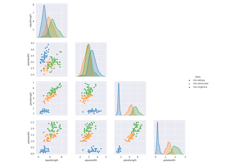
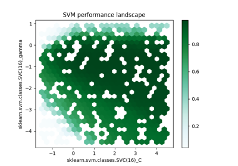
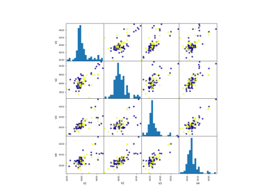
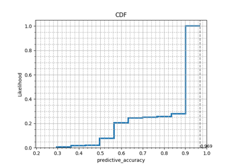
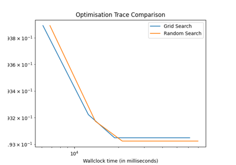

Examples Gallery¶
Introductory Examples¶
Introductory examples to the usage of the OpenML python connector.



Datasets
In-Depth Examples¶
Extended examples for the usage of the OpenML python connector.



Plotting hyperparameter surfaces
Plotting hyperparameter surfaces


Datasets



Fetching Evaluations



Measuring runtimes for Scikit-learn models
Measuring runtimes for Scikit-learn models
Usage in research papers¶
These examples demonstrate how OpenML-Python can be used for research purposes by re-implementing its use in recent publications.